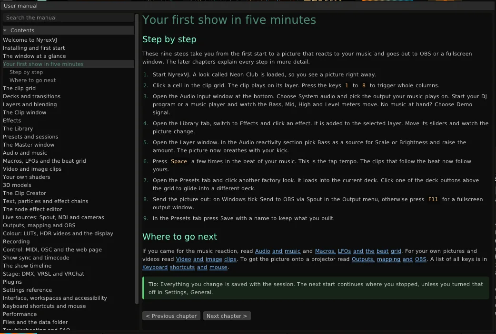
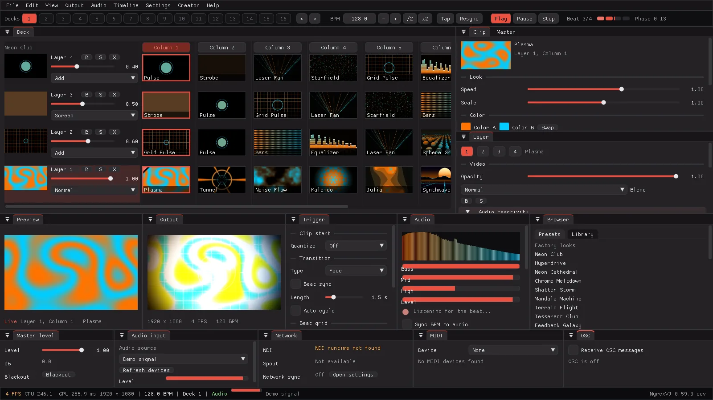
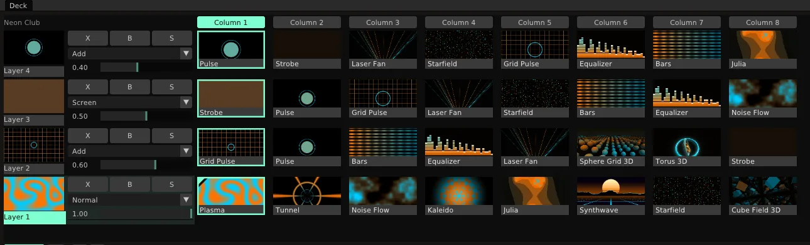
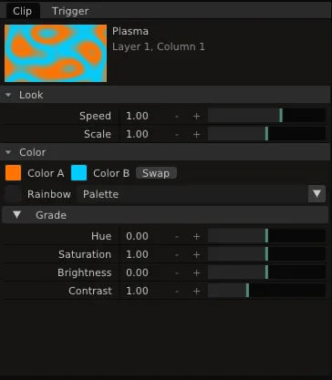
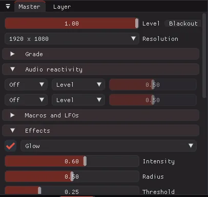
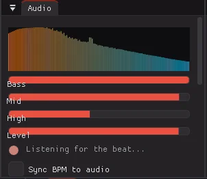
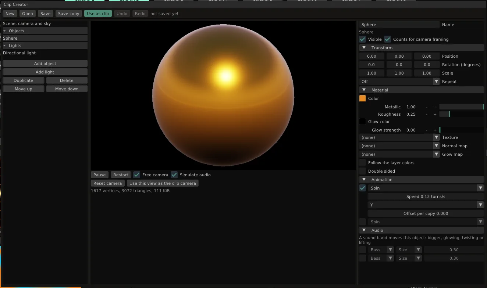
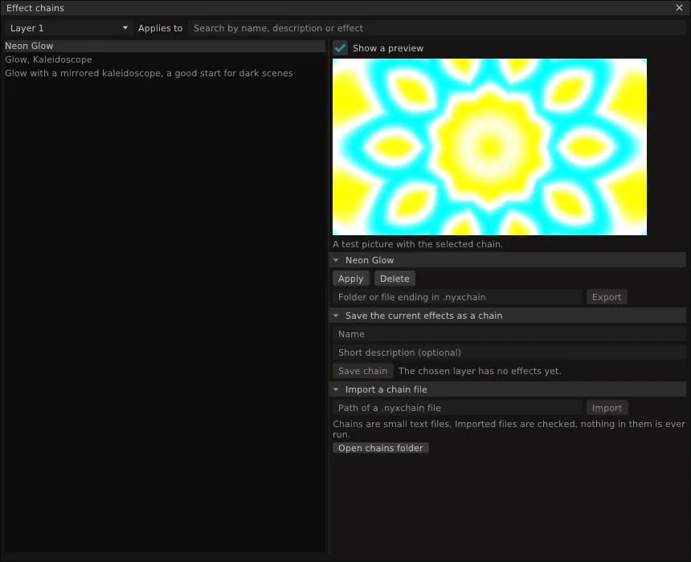
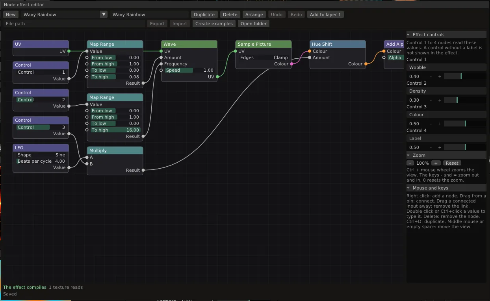
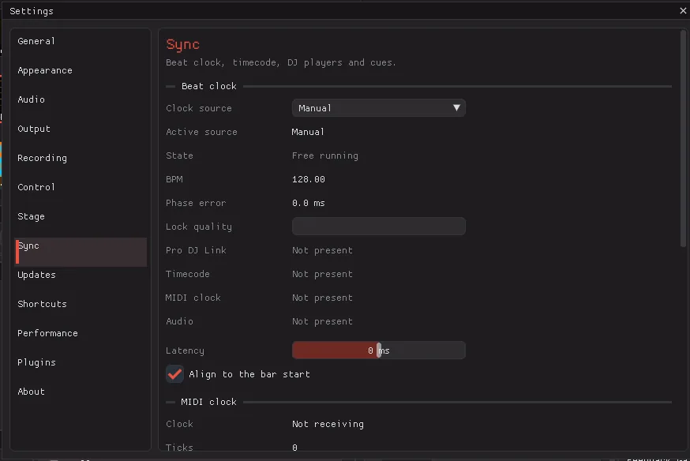

The whole manual on one page
Use the search of your browser (Ctrl+F) to find a word anywhere in the manual.
Contents
Getting started
- Welcome to NyrexVJ
- Installing and first start
- The window at a glance
- Your first show in five minutes
Playing visuals
- The clip grid
- Decks and transitions
- Layers and blending
- The Clip window
- Effects
- The Library
- Presets and sessions
- The Master window
Music and motion
Your own content
- Video and image clips
- Your own shaders
- 3D models
- The Clip Creator
- Text, particles and effect chains
- The node effect editor
- Live sources: Spout, NDI and cameras
Output and recording
Live control and shows
- Control: MIDI, OSC and the web page
- Show sync and timecode
- The show timeline
- Stage: DMX, VRSL and VRChat
- Plugins
Reference and help
1. Welcome to NyrexVJ
#What NyrexVJ is
NyrexVJ is a program for live visuals. You play generative clips, 3D models, videos and your own shaders on layers, stack effects on top, let everything follow your music and send the final picture to OBS, a projector or a screen. It was made for VRChat events and parties, and it is small enough to start in a second: one file, no installer, no game engine.
If you know Resolume Arena or similar programs, the layout will feel familiar: a clip grid on top, a deck and tempo row below it, a preview and an output picture, windows for the layer, the clip and the master, and a browser on the right.
#What you can do with it
- Play clips from a grid of 8 columns and 4 layers, 16 decks, with smooth transitions between decks.
- Let layers, the master and every effect value follow Bass, Mid, High, Level or Kick of your music, or macros, LFOs and the beat.
- Use more than 50 built-in clips and more than 70 effects, your own shaders, images, videos, glTF models and 3D scenes that you build yourself.
- Build your own effects from nodes without writing code.
- Send the picture to OBS with Spout, to other computers with NDI, to up to four output windows with mapping and edge blending, and into a video file.
- Control the show with a MIDI controller, OSC, a web page on your phone or a script, and automate it with a timeline and timecode.
- Drive stage lights with DMX over Art-Net, a VRSL strip in the video and VRChat avatar parameters.
#How to use this manual
You are reading the manual window of the program. Open it any time with F1 or with the menu Help, User manual. The chapter list is on the left, the text is on the right. Click a blue underlined word to jump to another chapter or section, and use Back above the text to return. The search field at the top of the list finds chapters that contain every word you type, and Ctrl+F puts the cursor there.
The same text is on the website, with pictures. The manual is written in English and German. The program shows the German version when its language is German and the English version for every other language.


#Names used in this manual
Menu paths are written as Menu, Item, for example Settings, Audio means the Audio page of the Settings window. Buttons, sliders and tabs are written the way they appear on screen. Keys are written in code style, for example Ctrl+Shift+R. A value in code style is something you type or a file name.
The notes in this manual come in three kinds. A tip makes work easier, a note adds a detail, and a warning tells you about something that can cost you a show.
2. Installing and first start
#Windows
Get NyrexVJ.exe from the Releases page of the project on GitHub. It is a single file and needs no installer: put it into any folder and start it. Windows SmartScreen may warn because the program is not code signed. Choose More info and then Run anyway.
The release also contains NyrexVJ-windows-x64.zip with the program, the changelogs and the readmes, and SHA256SUMS.txt. Compare the checksum of your download with the line in that file if you want to be sure that the file is complete and unchanged.
#Linux
Get NyrexVJ-linux-x64 and make it runnable with chmod +x NyrexVJ-linux-x64, or take NyrexVJ-linux-x64.tar.gz, which contains the program with the licenses, the changelogs and a list of its libraries. You need glibc 2.35 or newer (Ubuntu 22.04 or newer, Debian 12 or newer, Fedora or Arch), an X11 or XWayland session and a graphics driver with OpenGL 3.3.
Audio capture works through PulseAudio or PipeWire, MIDI through ALSA, and video clips need the FFmpeg libraries. Nothing has to be installed to start the program itself.
#The first start
On the first start NyrexVJ shows the welcome window with a short quick start and the list of what is new. You can change the language there. After every update the welcome window appears again with the changes of the new version. Open it later with Help, What's new.
NyrexVJ creates its data folder on the first start. It holds your settings, presets, your own shaders and models, recordings and the log. Files and the data folder lists everything in it.
If the program was closed in an unclean way, the next start does not load the old session by itself. It asks which autosave to continue from, offers an unsaved Creator scene and shows a crash report with the end of the log that you can attach to a bug report.
#Updates
NyrexVJ checks GitHub when it starts. If a newer version exists, it is downloaded and prepared in the background, and a card appears at the top right with Restart now and Later. Later shrinks the card to a small badge that stays until you restart. The download is only installed when its SHA-256 sum matches the one published with it.
Settings, Updates lets you choose the channel. Latest build follows every commit on the main branch and Stable follows the published releases. You can also turn off the automatic download, then the card offers an Install button. Check for updates in the Help menu starts a check at once.
3. The window at a glance
#The menu bar
This chapter names every part of the main window, so the rest of the manual can refer to them. The menu bar at the top has these menus:
| Menu | What it holds |
|---|---|
| File | New empty composition, Save as preset, Open data folder, Quit |
| Edit | Undo and Redo |
| Output | Open or close the output windows, Fullscreen, Outputs and mapping, Start or stop recording, Recording settings, Send to OBS via Spout, Send via NDI, Video routing |
| Audio | Choose the audio source: Off, Demo signal, System audio, Input, and Refresh devices |
| Timeline | Run the timeline, Show the timeline window, Play, Pause, Stop, Release hand moves |
| Settings | Opens the Settings window |
| Creator | Open the Clip Creator, New 3D scene, templates, the node effect editor, Text and particles, Effect chains, Shader editor |
| Help | User manual, What's new, links, Language, Check for updates |


#The deck window
The big window at the top is the deck window. It holds the clip grid with 8 columns and 4 layers, the 16 deck buttons, the tempo controls and the transition settings. Everything you play live starts here. See The clip grid and Decks and transitions.
#Preview and output
Below the deck window, on the left, you find two windows with a picture. The Output window shows the final picture exactly as it leaves NyrexVJ, with its size, the frame rate and the tempo. The Preview window shows a cell that you only looked at: Ctrl+click on a cell shows it there without playing it, and Play now plays it. That way you can prepare the next clip while the audience sees something else.
#Layer, Clip and Master
Next to the pictures are three windows that belong together. The Layer window holds opacity, blend mode, the audio reactions and the four effect slots of the selected layer. The Clip window shows the clip of the selected cell and its controls. The Master window works on the final picture: level, blackout, resolution, colour grade, macros, LFOs and four master effects. They are described in Layers and blending, The Clip window and The Master window.
#The Browser
The Browser on the right has three tabs. Presets holds the factory looks and your own looks, Library holds all clips, effects and files you can use, and Audio holds the audio source, the live spectrum and the beat detection. See Presets and sessions, The Library and Audio and music.
#The status bar
The bar at the bottom shows the frame rate, the processor and graphics time, the output size, the tempo, the current deck and the state of the audio. During a recording it also shows REC with the time and the dropped frames. You can hide it in Settings, Appearance.
#Moving windows around
All windows can be dragged by their title, docked next to each other, stacked as tabs or pulled out to float. NyrexVJ remembers the layout. If you lose a window or the layout got messy, use Settings, Appearance, Reset window layout. The size of the whole interface and its colours are in the same place.
4. Your first show in five minutes
#Step by step
These nine steps take you from the first start to a picture that reacts to your music and goes out to OBS or a fullscreen window. The later chapters explain every step in more detail.
- Start NyrexVJ. A look called Neon Club is loaded, so you see a picture right away.
- Click a cell in the clip grid. The clip plays on its layer. Press the keys
1to8to trigger whole columns. - Open the Audio tab in the Browser. Choose System audio and pick the output your music plays on. Start your DJ program or a music player and watch the Bass, Mid, High and Level meters move. No music at hand? Choose Demo signal.
- Open the Library tab, switch to Effects and click an effect. It is added to the selected layer. Move its sliders and watch the picture change.
- Open the Layer window. In the Audio reactivity section pick Bass as a source for Scale or Brightness and raise the amount. The picture now breathes with your kick.
- Press
Spacea few times in the beat of your music. This is the tap tempo. The clips that follow the beat now follow yours. - Open the Presets tab and click another factory look. It loads into the current deck. Click one of the deck buttons above the grid to glide into a different deck.
- Send the picture out: on Windows tick Send to OBS via Spout in the Output menu, otherwise press
F11for a fullscreen output window. - In the Presets tab press Save with a name to keep what you built.
#Where to go next
If you came for the music reaction, read Audio and music and Macros, LFOs and the beat grid. For your own pictures and videos read Video and image clips. To get the picture onto a projector read Outputs, mapping and OBS. A list of all keys is in Keyboard shortcuts and mouse.
5. The clip grid
#Cells, rows and columns
Every deck has a grid of 4 layers by 8 columns. A cell holds one clip. A click on a cell plays its clip on its layer, and the layer keeps playing it until you play another cell of the same layer or stop the layer. Layer 1 is the bottom layer and Layer 4 the top one, so higher layers are drawn over lower ones.
A column is a set of cells, one per layer. A click on the column header, or the key 1 to 8, plays every cell of that column at once. That is how you switch a whole look with one key: build looks as columns.


#Filling the grid
- Drag a clip from the Library onto a cell, or onto a column header to put it into the selected layer of that column.
- Select a cell and click a clip in the Library. The clip goes into the selected cell and plays.
- Right click a cell and choose Assign clip to pick a clip from a list.
- Drag a cell onto another cell to copy it.
- Right click a cell and choose Clear cell to empty it.
An empty cell shows a hint. Cells show a small picture of their clip. A cell that is playing is highlighted.
#Playing and previewing
A normal click plays the cell. Ctrl+click only shows it in the Preview window, and Preview without playing in the cell menu does the same. Use this to look at the next clip before the audience does, then press Play now.
#Layer controls in the grid
At the start of each row you see the name of the layer, its opacity slider, its blend mode and three small buttons. B bypasses the layer, which skips it completely. S solos it, so only this layer is shown. X stops the layer and clears what it plays. Click the layer name to select the layer, the Layer window then works on it.
#Starting on the beat
The Quantize menu in the transport bar above the grid decides when a launch happens. Off starts everything at once, as before. Beat, Bar, 2 bars and 4 bars hold a launch back until the next beat, bar, two bars or four bars of the beat clock, so a clip or a whole column comes in exactly on the grid, even if you press a little early or late.
It applies to every way of starting something: a click on a cell or a column header, the keys 1 to 8, a deck button, MIDI, OSC, the web interface, cues and the timeline. Play now in the Preview window, putting a clip into a cell from the Library, and starting from the command line stay immediate, because there you asked for the clip right now. A small counter next to the menu shows how many launches are waiting. If you start the same layer or column twice before the beat, only the last one counts.
If the beat clock is lost, or the show is paused, nothing waits for a beat that will not come: launches start at once, and the clock locks again by itself when the beat returns. At most 32 launches can wait, and a 33rd starts at once. The setting is saved with your other settings.
6. Decks and transitions
#Sixteen decks
The row of 16 buttons above the clip grid switches decks. Each deck is a complete set: four layers, eight columns, effects, colours. The deck you are on is orange, empty decks are dim and start blank when you click them. A new deck takes over with a transition instead of a cut.
#Transitions
| Transition | Look |
|---|---|
| Fade | Smooth crossfade |
| Dissolve | Noisy burn-through with a glowing edge |
| Zoom | Pulls through the old picture into the new one |
| Wipe | Soft diagonal wipe |
| Radial | A circle that opens from the centre |
| Spin | Both pictures rotate into each other |
| Slide | The new deck pushes in from the side |
Choose the transition and its length next to the deck buttons. Set the length in seconds, or tick Beat sync to count in beats so the change follows the tempo. If you switch again in the middle of a transition, NyrexVJ freezes the picture you see and fades from there, so there is never a jump.
#Auto cycle
Tick Auto cycle and choose a number of beats from 4 to 128. NyrexVJ then steps through the used decks by itself and changes at that interval. It is good for the quiet hour of a party when you want to hand the controls to somebody else.
#Working with decks
Right click a deck button. You can rename the deck, copy the current deck into it, fill it with a factory look, clear it or remove it. In the Presets tab a click on a factory look loads it into the current deck, and the button Fill the decks with factory looks puts 16 looks into the 16 decks in one go. Page Up and Page Down go to the previous and next used deck, and Ctrl+1 to Ctrl+8 and Ctrl+Shift+1 to Ctrl+Shift+8 jump to decks 1 to 16.
Decks are saved with a preset and with the session. Presets and sessions explains what exactly is stored.
7. Layers and blending
#The layer stack
A deck has four layers. NyrexVJ draws Layer 1 first and every higher layer over it. Each layer has its own clip, opacity, blend mode, speed, scale, colours, colour grade, audio reactions and four effect slots. The effects of a layer only change that layer, the master effects change everything.
Click the layer name in the grid, or one of the numbers at the top of the Layer window, to select a layer. The Layer, Clip and Master windows then show its settings.
#Opacity and blend mode
Opacity fades the layer from invisible to fully visible. A layer faded to zero is not drawn at all, so a hidden layer costs nothing. The blend mode decides how the layer mixes with what is below it. These are the 14 modes:
| Mode | What it does |
|---|---|
| Normal | The layer covers what is below, in proportion to its opacity |
| Add | Adds the light of both, a glow that never gets darker |
| Screen | Lightens like two projectors on the same screen |
| Multiply | Darkens, black stays black, white changes nothing |
| Subtract | Takes the brightness of the layer away from the picture below |
| Difference | Shows how much the two pictures differ, useful for outlines |
| Exclusion | A softer, lower contrast Difference |
| Overlay | Adds contrast to the picture below, using the layer as the pattern |
| Soft Light | A gentle version of Overlay |
| Hard Light | A strong version of Overlay |
| Lighten | Keeps the brighter of the two at every point |
| Darken | Keeps the darker of the two at every point |
| Color Dodge | Brightens the picture below strongly where the layer is bright |
| Linear Burn | Darkens the picture below strongly where the layer is dark |
#Bypass, solo and stop
Bypass skips a layer as if it were not there, with all its effects. Solo shows only the soloed layer. Stop removes the playing clip from the layer. All three are in the row of the grid and in the Layer window, and also reachable by OSC and MIDI.
#Reacting to music
The Layer window has two modulation slots under Audio reactivity. A slot takes a source (a band of the music, a macro, an LFO, the beat), a target (opacity, scale, speed, hue, brightness or saturation) and an amount. Audio and music and Macros, LFOs and the beat grid explain the sources.
8. The Clip window
#The selected clip
The Clip window shows the clip in the selected cell. If that cell is empty but the layer is playing something, it shows what the layer plays. At the top you see a picture of the clip, its name and its kind: video, image, shader file, 3D model, 3D scene, Spout input, NDI input, camera or plugin source. If no clip is selected the window asks you to select one in the deck or to click a clip in the Library.


#Look and colour
The Look section has Speed and Scale. Speed runs from 0.1 to 4 times and changes how fast the clip moves, Scale zooms the clip from 0.25 to 4 times. Both belong to the layer, so they stay when you change the clip on that layer.
The Color section has two colours, A and B, a Swap button, a Rainbow switch and a Palette list. Generative clips use these two colours, so one click on a palette recolours a whole look. Under Grade you find Hue, Saturation, Brightness and Contrast for the layer, with Reset grade next to them.
#Controls of special clips
Some clips add their own controls to the Clip window.
- Video clips show the playback controls described in Video and image clips.
- Shader files show their error messages and their own sliders, see Your own shaders.
- 3D models and scenes show their loading state and information about the model, see 3D models.
- Spout, NDI and camera clips show the source selection and the connection state, see Live sources: Spout, NDI and cameras.
- Plugin sources show the parameters of the plugin, see Plugins.
9. Effects
#Effect slots
Every layer has four effect slots and so does the master. Effects run from slot 1 to slot 4, so the order matters: a blur before a colour change looks different from a colour change before a blur. The effects of a layer change only that layer, the effects of the master change the final picture.
Each slot has a tick box to switch it on or off, a list to choose the effect (type in the list to search it), up to four sliders, and a row for the music reaction. A slider that you moved goes back to its default with a right click. Effects that draw in three dimensions carry a [3D] mark in the list.
#Adding effects
- Open the Library, switch to Effects and click an effect: it goes into the first free slot of the selected layer. If all four slots are used, NyrexVJ says so.
- Drag an effect from the Library onto a slot to put it exactly there.
- Right click an effect in the Library to add it to a chosen layer or to the master.
- Choose an effect from the list in the slot itself.

#Reacting to the music
Under the sliders of a slot you find a band list, a mode and a target. Pick Bass, Mid, High, Level or Kick (or a macro, an LFO, Beat or Bar) as the band. Then choose how it acts:
- Parameter moves one value of the effect, the one you pick as target, by the amount you set.
- Gate shows the effect only while the band is loud and fades it out in silence. The value you set decides how sensitive the gate is.
Gate is a fast way to make a strobe or a glitch that only hits on the beat.
#Your own effects
Besides the built-in effects there are effects that you make or install yourself: node effects from the node editor (shown as Node: name) and ISF filters from your shader folder (shown as ISF: name). They work in the slots like every other effect. See The node effect editor and Your own shaders. To keep a set of four effects together, save it as a chain, see Effect chains.
10. The Library
#Clips, effects and assets
The Library tab of the Browser has three views. Clips lists everything you can put into a cell, Effects lists everything you can put into an effect slot, and Assets shows the files your own scenes can use. The search field at the top finds items by name.

#Filtering clips
In the Clips view a row of filters narrows the list: All, 2D, 3D, Models, Scenes, Spout, Media, Shaders, Generators and Live. Clips that were added in the current version carry a small mark that disappears with the next minor version.
| Filter | What it shows |
|---|---|
| 2D | Every clip that is not a 3D clip, so generative clips, images, videos and shaders |
| 3D | Clips with real 3D content, such as the built-in meshes, models and scenes |
| Models | Your own .glb and .gltf files |
| Scenes | Scenes you made with the Clip Creator |
| Spout | The four Spout input clips |
| Media | Your images and videos |
| Shaders | Your own shader files and ISF generators |
| Generators | Text clips and particle clips, including the built-in particle clips |
| Live | NDI input and camera clips |
| Favorites | The clips you marked with a star, from all of the above |
#Using a clip
A click on a clip puts it into the selected cell and plays it. You can also drag it onto any cell, or onto a column header to put it into the selected layer of that column. A right click offers Put into the selected cell, Put into the next free cell of a layer, and for scenes Edit in the Clip Creator.
#Favorites and tags
Right click a clip and choose Add to favorites. Favorites show a small diamond in the list and are all in the Favorites filter. Edit tags opens a small window where you type a word and press Enter to add it as a tag, for example intro or red. A clip can have 8 tags of up to 24 characters, and the window lists the tags that your library already uses so you can click one instead of typing it again.
The search field understands tags: a word finds clips by name and by tag, tag:red finds only clips with that tag, and is:fav finds only favorites. You can combine them, for example is:fav tag:intro.
Favorites and tags are saved in library_meta.json in the data folder, next to your own files, and not inside presets. They belong to the name of the clip. If you rename a file, the new name starts without a star and without tags. A file that cannot be read is kept as library_meta.json.damaged and you start with an empty list.
#Replacing a clip everywhere
If you swap a video for a better version, you do not have to touch every cell. Right click the clip in the Library and choose Replace this clip everywhere, then pick the new clip. Every cell of every deck that plays the old clip then plays the new one. Layer, effect and mixing settings stay.
Tick Keep the playback settings of the cells if you want the speed, loop and start of each cell to stay as they are. The message afterwards says how many cells were changed. Undo (Ctrl+Z) takes the whole replacement back in one step.
#Files and folders
The bottom of the Library explains where your own files go and has buttons for each folder: models, media and shaders. Put the files there and press Scan again, or just drag them onto the NyrexVJ window. Create example shader writes a small shader that you can open in any text editor. The Assets view lists the models and textures that your scenes can use and the scenes you saved. Files and the data folder shows where those folders are on your computer.
11. Presets and sessions
#Factory looks
The Presets tab starts with the factory looks. A click loads the look into the current deck, a right click lets you load it into another deck. There are 18: Neon Club, Milky Red, Crystal Cavern, Crystal Lines, Acid Rainbow, Deep Space, Synthwave Night, Laser Show, Minimal Mono, 3D Showcase, Warp Tunnel, Audio Reactor, Fractal Dream, Cyber Rain, Inferno, 3D Worlds, Crystal Cube and Pop Art.
The button Fill the decks with factory looks puts 16 looks into the 16 decks, a quick way to have something for every mood.

#Your own presets
Under Save current look, type a name and press Save. A saved preset contains all 16 decks, with their layers, clips, effects, colours, the master, macros and LFOs and the tempo settings. The list My presets shows what you saved. A click loads a preset, and a right click gives Overwrite with current and Delete.
File, Save as preset does the same from the menu. Presets are small files in the presets folder, so you can copy them to another computer.
#The session
Besides presets, NyrexVJ keeps a session: the state of the program as you left it. On the next start it opens exactly like that, unless you turn off Restore last session on start in Settings, General. The session is saved every 30 seconds when something changed, and a rotating set of the last ten autosaves is kept in the recovery folder.
#Show packages
A show package is one file that holds your current show and every file it uses, so you can take it to another computer on a USB stick. It ends in .nyxshow. Use it when you play at a venue, when you move to a new computer or when a friend should open the same show. Presets and sessions alone only remember clips by name; a package brings the clips themselves.
Making a package. File, Export show package opens the Show package window on the Export tab.
- Give the show a name and, if you like, notes for whoever opens it.
- Choose where to save. The button Suggest a place fills in a file in the shows folder of the data folder. The ending
.nyxshowis added if it is missing. - Open Presets to pack too and Venue setups to pack too and tick what should travel with the show. Pack the cue list and Pack the timeline add those two files.
- Press Check what goes in. NyrexVJ looks through the show, finds every clip and effect it uses and lists the files: the kind, the size, what needs the file and a field for a note.
- Press Create the package. A progress bar shows the work and Cancel stops it, leaving no half written file.
Files that are missing, too large for a package or have a name that cannot be used are listed and left out, and you see why. Nothing is replaced behind your back, and built-in clips and effects are not packed because every NyrexVJ has them.
Source and licence. NyrexVJ cannot know whether you may pass a file on. Write where a file comes from or its licence in the last column. The note is stored in the package and shown to whoever imports it, and the window tells you how many media files have none.
What is never in a package. Plugins are never put into a package. The package only lists their names, and the other computer must have them installed. This way opening a package can never start code that came from the package. Live sources such as Spout, NDI and cameras are listed too, but they come from the other computer.
Opening a package. Use File, Import show package, or drop a .nyxshow file on the NyrexVJ window. The window opens on the Import tab and checks the package. It tells you, file by file, what would happen: will be added, already here and the same, you have a different file, not in the package, or the name cannot be used. Nothing is changed until you press Import.
If a file with the same name is already on your computer you choose what happens:
- Keep mine leaves your file alone. This is the default.
- Keep both copies the new file under a name such as
loop (2).mp4and changes the show to use it. - Replace mine, save it first copies your file to the
show_backupsfolder and then replaces it.
Two more ticks, Also replace my cue list and Also replace my timeline, are off by default. A replaced cue list or timeline is used after the next start of NyrexVJ.
When the import is done you see how many files were added, renamed, replaced and kept. Open the show makes it the current show, and Open the folder with the saved files shows your old files if you chose Replace. If anything goes wrong halfway, everything is put back as it was and the window says so.
Clips that are missing. If a clip or effect of the show is not in the package and not on your computer, its cell stays empty and the window lists it. NyrexVJ never puts a different clip there. If the files are on a drive you have, use Find missing files: point to a folder, for example the original media drive, and NyrexVJ searches it. Only files that are exactly the same as the ones the package knew are ticked. A file that only has the same name is shown, not ticked, and marked that its content cannot be checked, so you decide. Press Copy the ticked files to bring them in.
Safety. A package is only data. Every file in it has a checksum that is checked before anything is moved into place. File names must be plain names without folders, and the folder is chosen by the kind of file, so a package cannot write outside the data folder. Only the usual file endings of each kind are accepted, every kind has a size limit, and files are stored without compression, so a small package cannot unpack into something huge. A package from a newer version of NyrexVJ, a package that is cut off or damaged and a package with anything that does not add up is refused, and nothing on your computer is changed.

#Community packages
A community package is one file that ends in .nyxpack. Somebody made presets, shaders, node effects, masks, venue setups or a plugin and put them into it so you can install them in one step, update them later and remove them again. It is not the same as a show package: a show package moves your own show to another computer, a community package is something you install from somebody else.
Installing a package. File, Install community package opens the Community packages window on the Install tab. You can also drop a .nyxpack file on the NyrexVJ window.
- Type or paste the path of the file and press Check package.
- Read the top of the page: the name and version, the picture the author added, who made it, the licence, which NyrexVJ versions it was made for, and the fingerprint of the file. If the author published a fingerprint, compare it. A different value means the file is not the one the author made.
- Open Licence text to read the licence the author wrote down.
- Under What will happen you see every file and what would be done with it: will be added, will be updated, already installed and unchanged, you already have this file, or a different file with the same name. Nothing is changed yet.
- Read the hints above the table. Red hints stop the installation and say what to do. Yellow hints need your consent or are good to know.
- Press Install package. A progress bar shows the work and Cancel stops it.
What can stop an installation. A package that was made for other versions of NyrexVJ, a package that needs another package you have not installed, a package that needs a newer version of another package than you have, a package that would break a package you already have, a file that another package owns and a folder that sits where a file should go. Each of these is explained in plain words in the window and nothing is installed until it is solved.
Files that differ. If you already have a file with the same name but other content, the installation does not go on until you choose. Keep my files leaves yours alone and does not install the package's copy. Replace my files, mine are saved first moves yours to the package_backups folder and then puts the new one in place. A file that is exactly the same is left alone.
Older versions and updates. If a newer version of the package is already installed, the window says so and asks you to tick Install the older version anyway. If you install a newer version, it is an update: the old files of the package that the new version no longer has are moved to the backup, and files you changed yourself stay where they are. If something goes wrong halfway, everything is put back as it was and the window says so.
Shaders. A shader is a small program that runs on your graphics card. A faulty one can make the picture stutter or freeze. The window tells you how many shader files a package has. Only install shaders from authors you trust.
Plugins. A package can hold a plugin. A plugin is a program that runs inside NyrexVJ with the same rights as NyrexVJ, so the window asks you to tick I trust the author and want to install this plugin, and does not go on without it. Even then the plugin is only copied. It stays switched off until you switch it on yourself in Settings, Plugins, where the usual safety rules apply: the time budget, the crash marker and safe mode. A package can never switch a plugin on, and a plugin that was stopped for crashing stays stopped. A plugin has to be switched off before you update or remove it. --no-plugins still switches all plugins off for a run.
Seeing and removing what is installed. The Installed tab lists the packages with their version, author and licence and the files that belong to each. Remove... moves the files of a package to the package_backups folder instead of deleting them. A file you changed after installing it stays. A package that another package needs cannot be removed. Open backup folder shows what was moved.
Making a package. The Create tab packs a folder. The folder needs a pack.json with the id, name, version and licence, and can have the folders presets, shaders, nodes, masks, venues and plugin, a preview.png and a LICENSE.txt. The id uses lower case letters, digits and -, _ or ., and the version has up to four numbers such as 1.2. Dependencies list the ids and the oldest version of other packages the package needs. Type the folder and where the package should be saved, tick Replace the file if it exists when a package of that name is already there, and press Create package. Problems in the folder are listed and nothing is written until they are fixed. Videos, models and scene packs do not go into a community package, use a show package for them.
{
"id": "neon-starter",
"version": "1.2",
"name": "Neon Starter Pack",
"author": "Your name",
"description": "A few presets and a glow shader.",
"license": "MIT",
"nyrexvj": { "min": "0.40", "max": "" },
"dependencies": []
}Safety. A package is only data. Every file has a checksum that is checked before anything is moved into place. File names must be plain names without folders and the folder is chosen by the kind of file, so a package cannot write outside the data folder. Files are stored without compression and every kind has a size limit, so a small package cannot unpack into something huge. A package that is cut off, changed, too large, in a newer format or in the wrong format is refused and nothing on your computer is changed. Packages are not signed: the fingerprint shows that a file is the one somebody published, not that its content is safe. There is no online catalogue, you get a package from somebody and install it yourself.

#Undo and redo
Edit, Undo and Redo, or Ctrl+Z and Ctrl+Y (Ctrl+Shift+Z also redoes), step through your changes to sliders, clips, effects and decks. Playing a clip, triggering a column and moving the macro knobs are performance actions and are not part of undo. In the timeline and the node editor the same keys work on their own history while those windows have the focus.
12. The Master window
#Level and blackout
Level at the top is the brightness of the final picture from 0 to 1, a master fader. Blackout turns the whole picture black at once and back again, also with the key B. It is the emergency stop of your show and it is available by MIDI and OSC as well.


#Resolution
The Resolution list sets the size of the final picture: 960 x 540, 1280 x 720, 1920 x 1080 (the default) or 2560 x 1440. A smaller size is easier on the graphics card. The output windows scale the picture to their own size, so the resolution here is the quality of what is rendered.
#Grade, reactions and effects
The Grade section has Hue, Saturation, Brightness and Contrast for the whole picture, and Reset grade. Audio reactivity works like the slots of a layer. The Macros and LFOs section holds the eight macro knobs and four LFOs, see Macros, LFOs and the beat grid. Effects are the four master effect slots, see Effects.
13. Audio and music
#Choosing a source
Open the Audio tab in the Browser, or Settings, Audio, or the Audio menu.
| Source | What it listens to |
|---|---|
| System audio | Whatever your computer plays, for example Rekordbox, Serato, Spotify or a browser. On Linux this is System audio (default output) and every monitor source of PulseAudio or PipeWire |
| Input | A microphone or a line-in. On Linux Default input and every other PulseAudio or PipeWire source |
| Demo signal | A built-in beat, so you can build looks without music |
| Off | Nothing. Clips and effects follow the BPM clock instead |
The tab shows the live spectrum, the meters for Bass, Mid, High and Level, the beat detection and a detected tempo. If the chosen device delivers no sound for a few seconds, the tab and the status bar say so and suggest to play something or to pick another source.


#Analysis settings
Gain raises or lowers the level that the analysis sees, Smoothing makes the bands calmer, and Beat sensitivity decides how easily a beat is found. They are in the Audio tab and in Settings, Audio. If the meters hit the top all the time, lower the gain; if the beat is found in every sound, lower the sensitivity.
Detected tempo shows the estimate, and Use takes it over as the tempo. Sync BPM to audio keeps the tempo locked to the detected beat all the time. It works best with music that has a clear kick. For a steady show with a DJ it is often better to tap the tempo yourself or to follow a clock, see Show sync and timecode.

#Making visuals react
Reactivity is set in three places:
- The Layer window has two slots that move opacity, scale, speed, hue, brightness or saturation with a band.
- The Master window has the same slots for the final picture.
- Every effect slot has a band and a mode, see Effects.
Bass, Mid, High and Level are the strength of those parts of the spectrum from 0 to 1, Kick is a short pulse on the bass beats. Choose Bass for slow breathing, Kick for hits, High for sparkle.
Some clips draw the real sound: Bars, Equalizer, Spectrum Circle, Oscilloscope, Spectrum Warp and the Oscilloscope effect show the real spectrum or waveform. Without an audio source they run on a virtual beat that follows the BPM.
14. Macros, LFOs and the beat grid
#Sources besides the music
Every place that can follow Bass, Mid, High, Level or Kick, which are the two slots of a layer, the master and every effect slot, can follow three more kinds of source.
| Source | Value |
|---|---|
| Macro 1 to 8 | The position of a knob that you turn by hand |
| LFO 1 to 4 | A tempo synced oscillator |
| Beat | A ramp from 0 to 1 over one beat |
| Bar | A ramp from 0 to 1 over one bar |
#Macros
The Master window has a section Macros and LFOs with eight macro knobs. One macro can drive many values at once: choose Macro 1 as the source in several places, then one knob moves them all. Each macro can be mapped to a MIDI controller in Settings, Control, or set over OSC at /nyrex/macro/1 to /nyrex/macro/8. Reset macros sets all knobs back.
#LFOs
An LFO is a repeating movement. NyrexVJ has four, with the shapes Sine, Triangle, Saw, Square, Random and Smooth random. The cycle runs from a quarter beat to 32 beats, and the phase sets where in its cycle the LFO starts. Because an LFO counts beats, Tap, Resync, Pause and the tempo move it along and a sweep never drifts off the beat.
#Tempo and the beat clock
Below the clip grid is the tempo row: the BPM field with the buttons minus, plus, /2 and x2, then Tap and Resync, then Pause. Tap sets the tempo from your taps, also with the Space key. Resync restarts the beat count at 1, which is useful when the picture is off by a beat. Pause freezes the tempo clock and all clip motion. The tempo can also come from the audio, from MIDI clock, from timecode or from Pro DJ Link, see Show sync and timecode.
#The beat grid
Click the beat display next to the tempo controls to open the beat grid.
- Beats per bar, from 2 to 8, sets how long a bar is.
- The buttons for earlier and later move the grid by a sixteenth of a beat. Use them when your beat is slightly off the music.
- Snap to beat aligns the grid to the nearest beat without changing the count.
- Bar start here makes the nearest beat the first beat of a bar.
15. Video and image clips
#Adding files
Put images and videos into the media folder, or drag them onto the NyrexVJ window. Dragged files are copied into the folder in the background, up to 256 MiB each, and appear in the Library under Media. Images are PNG, JPG, JPEG, BMP, TGA and GIF (first frame). Videos are MP4, MOV, M4V, MKV, AVI and WEBM. At most 128 media clips are listed.
Images with transparency keep it, so a logo with soft edges lies over the layers below without a halo. The picture is fitted into the layer with its own proportions and nothing is stretched. The Scale slider zooms it. Sound in videos is ignored.
#FFmpeg
Video clips need the FFmpeg libraries. If they are missing, the Clip window shows Set up FFmpeg. In Settings, Performance, the button Download and set up FFmpeg downloads a ready-made LGPL build into the NyrexVJ folder, checks its checksum and licence and never touches an FFmpeg that is already installed. Nothing is downloaded unless you press the button. You can also copy the library files into the folder by hand. HAP, H.264, HEVC and other codecs then play.
#Playback controls
Every video cell has its own play head. In the Clip window you find these controls:
| Control | What it does |
|---|---|
| Play and Pause | Starts and stops the video |
| Step back and forward | Moves one frame |
| The position slider | Scrubs to any point |
| In point and Out point | Limits the part of the video that plays |
| Loop mode | Loop, Ping-pong, Once and hold the last frame, or Once and then disappear |
| Clip speed | From minus 4 to plus 4 times, negative values play backwards |
| Clip length in beats | Plays the range from In to Out in exactly this many beats, following the tempo |
| Reset playback | Back to the defaults for this cell |
Backwards playback decodes short pieces in advance. Videos with long keyframe intervals need more processor time and memory for it. A video that plays in several layers shares one decoder.
#Smooth clip changes
The next clip of each layer is prepared in the background, so a clip change shows no empty frame. A video that is not on a layer for a few seconds is released and loaded again when needed.
#DXV videos
DXV videos from Resolume take a lot of processor time. NyrexVJ can make HAP copies of them in the background and plays the copy through the compressed HAP path, which needs almost no processor time and a fraction of the video memory. Settings, Performance, Convert DXV videos to HAP has the import mode Off, Ask (the default) or Automatic, the HAP format and a size limit for the cache. The original files stay untouched and the video keeps playing as it is until the copy is ready. HAP Q with transparency is not supported.
#Choosing the video decoder
Settings, Performance, Video playback lets you pick the decoder: Automatic, Prefer hardware or Force software. A button tests the hardware decoding on your computer. The video monitor lists every playing video with its codec, decode and upload times, dropped and late frames and its memory. If a video looks flat because it is HDR, the monitor says so: HDR is shown without tone mapping.
16. Your own shaders
#Making a shader clip
Any fragment shader can become a clip. Put a .glsl, .frag or .fs file into the shaders folder, or drag the file onto the window. It shows up in the Library as Shader: file name, under the filter Shaders. It works like every other clip: Speed, Scale, colours, effects, audio, LFOs and macros all apply.
NyrexVJ looks at the folder once a second. A saved change reloads the shader while it plays, so you can edit the file in any text editor. If the shader does not compile, the Clip window shows the message with the line number of your file and the last working version keeps running. Library, Create example shader writes a small shader to start from.
#Two styles
A file with a void main() is a NyrexVJ style shader, a file with a mainImage function and no void main() is a Shadertoy style shader. NyrexVJ finds out by itself. In the NyrexVJ style these names are ready to use: vUv, uRes, uTime, uBeat, uBpm, uColorA, uColorB, uAudio with bass, mid, high and level, uKick, and the helpers spec(x) and wave(x) for the spectrum and the waveform. In the Shadertoy style iResolution, iTime and iChannel0 for the audio are available.
The full list of names, helpers and limits is in the document docs/SHADERS.md of the project.
#Transparency and several passes
A line #pragma nyrexvj alpha makes the clip transparent. Sections called buffer a to buffer d, image and channel turn the file into a multipass shader with feedback, like Shadertoy. Images and videos from the Library can be used as inputs. A file without such a line behaves exactly as it always did.
#ISF files
ISF files, the format of VDMX and others with a header between /*{ and }*/, are read from the same folder. A file with an inputImage input becomes an effect named ISF: file name. Any other ISF file becomes a clip. The inputs of the file show as controls in the Clip window, or as the four controls of the effect. What an ISF file cannot do, like vertex shaders, transitions and audio inputs, is listed in the Clip window.
#Controls for your shader
A shader can declare its own sliders and switches with #pragma nyrexvj param. They appear in the Clip window under Shader controls. A right click resets a control to the default of the file, and Reset controls resets all of them.
#The shader editor
Creator, Shader editor opens a window with a text editor on the left, a live preview on the right and a list of problems below the text. In the Clip window of a shader file, Edit in shader editor opens that file. New starts from one of four templates, Open lists the files of the shaders folder, and the buttons Save, Save as, Reload from disk, Undo, Redo and Compile now do what they say. Live preview switches the preview and the compiling off.
- The text has line numbers and colours for keywords, types, built-in functions, the NyrexVJ names,
#pragma nyrexvjlines, numbers and comments. Ctrl+Z and Ctrl+Y undo and redo, Tab and Shift+Tab indent, Ctrl+/ comments a line, Ctrl+S saves and F5 compiles at once. - A mistake is marked on its line in red, with the message as a tooltip on the mark in the margin, and listed below the text. A click on an entry of the list moves the cursor to that line.
- The shader is compiled a moment after you stop typing, never while you type. The preview is separate from your clips: it never changes a clip that is playing, and a shader that does not compile leaves the last working picture on screen with the message beside it. Shown version says which text the picture comes from.
- A shader that is very slow is drawn only every few frames in the preview, and one that is far too slow is stopped until you press Resume. Image filters are not shown in the preview, and images and videos used as channels are empty there.
- Save writes the file into the shaders folder in one step, and a clip that uses the file reloads by itself, as described above. The name may use letters, digits, space and
- _ . ( ), up to 64 characters, and must end in.glsl,.fragor.fs. An existing file is replaced only after you agree. If another program changed or deleted the file while you were editing, the editor asks whether to keep your version, load the disk version or save a copy.
The editor does not have a search, several open files, autocompletion or a debugger. Text over 256 KiB is refused.
17. 3D models
#Built-in 3D clips
Besides the shader clips there are clips that draw real 3D meshes: Torus Knot Mesh, Crystal Cluster Mesh, Orbit Rings Mesh, Chrome Orbs Mesh, Neon Cubes Mesh, Gold Knot Mesh and Pulse Columns Mesh. They sit in the Library like every other clip, follow the layer colours, speed and scale, pulse with bass and kick and go through the same effects.
#Your own models
Put a .glb or .gltf file into the models folder. The Library shows the path and has a button that opens it. Press Scan again in the Library, no restart is needed. The model appears as Model: file name.
- Textures in PNG and JPEG, node animation, skinned characters with skeletal animation, morph targets and several meshes are supported.
- A model loads in the background the first time a deck contains it, so the picture never stalls. There is a time limit of 60 seconds and a Cancel loading button.
- A file that is damaged, too large or uses an unsupported feature is refused. The reason is in the log and in the tooltip of the clip.
- Layers that play the same model share it in memory.
#Lighting and materials
Models with metallic-roughness materials, normal maps, emissive maps and cut-out transparency are drawn with physically based lighting. Blended transparency is sorted back to front per mesh. Files compressed with Meshopt are read by default. Draco files only work in a build made with the option -DNYREXVJ_DRACO=ON, otherwise they are refused with a message that names the option.
Lights and cameras inside a file are counted but not used, the scene keeps its own. Limits protect the video memory: 128 joints per skin, 32 morph targets and 640 MiB per scene. Not supported yet are tangents and second UV sets, texture transforms and material extensions beyond emissive strength.
#The model information
Select a model clip and look at the Clip window. It shows the loading state, the number of vertices and triangles, skins, joints, morph targets, blended materials, the lights and cameras in the file that are not used, the GPU memory and the load time. If the loading fails, Try again loads the file once more. An animation in the file plays by itself.
18. The Clip Creator
#What it is
The Clip Creator builds your own 3D scenes from shapes, models and lights. You let everything move with the music and save the result as a portable .nyxclip file. The scene then plays like any other clip. Open it from the Creator menu, Open Clip Creator.
#The three columns
- The left column lists the objects, the lights and the scene settings. Add object offers Sphere, Cube, Cylinder, Cone, Plane, Torus, Torus Knot and Model from the library. Add light gives a Directional light or a Point light, up to four.
- The middle shows a live preview. Drag to orbit, use the mouse wheel to zoom. Free camera, Simulate audio and Reset camera help you look around, and Use this view as the clip camera keeps the view you found.
- The right column is the inspector for the selected object. It has Transform (position, rotation, scale), Repeat (a ring or a line of copies), Material, Texture, Animation, Audio reactions and the settings for cameras and the sky.


#Objects, materials and animation
A material has a colour, Metallic, Roughness, a glow colour and strength, and optional texture, normal map and glow map. Tick Follow the layer colors to let the object take the colours of the layer it plays on, so one scene can be recoloured with one click. Animation offers movements such as Spin, Bob, Orbit, Pulse and Sway, each with its own settings like speed, height or radius.
Under Audio reactions a band (Bass, Mid, High, Level or Kick) moves the object: it gets bigger, glows, twists or lifts. The music can also move the light intensity and the zoom of the camera.
#Cameras and sky
A scene can hold up to eight cameras. Pick the one that plays, or let the clip cut between all of them every few beats with Cut (beats). A camera has a distance, a height angle, a start angle, a field of view, an orbit speed and a height sway. Sky and exposure set the colours of the sky, the horizon and the ground, the sky brightness and the exposure.
#Templates, saving and using
Start from a template (Creator menu, Start from a template, or Open in the window) or from an empty scene with New. Save writes a .nyxclip file into the clips folder. It contains the scene description and, as copies, the .glb models and the PNG or JPEG textures the scene uses, up to 200 MiB, so one file is all you need to share a scene. It then shows up in the Library under Scenes as Scene: name. Use as clip also puts it into the selected cell of the deck. Save copy saves the scene under a new name.
Only .glb models can be stored in a scene. A .gltf that needs separate files is listed in the Assets view but cannot be used. Undo and Redo work inside the Creator while it has the focus. An unsaved scene is kept in the recovery folder in case the program closes unexpectedly.
19. Text, particles and effect chains
Three tools that make your own content without a shader: text clips for names and messages, particle clips for sparkle, snow and confetti, and effect chains that save the effects of a layer so you can use them again. Text and particles are normal clips. You put them in a cell, play them on any layer, add effects, blend them over other layers and send them to every output like any other clip.
#The window
Creator, Text and particles... opens one window with two tabs, Text and Particles. Creator, Effect chains... opens the window for chains, and the same window opens from the button Effect chains... under the effect slots of a layer or of the master.
- The top of the Text tab lets you open a saved text or start a new one, and the top of the Particles tab lets you start from one of the built-in clips or a file you saved. The settings are below, and a live preview is next to them that reacts to the music that is playing.
- Save as clip writes the file and puts the clip in the Library under the filter Generators within a moment. If the clip is already playing on a layer, it changes to the saved version while it plays.
- Delete removes a file after you confirm it, and Open folder shows the folder with your files.

#Text clips
A text clip shows a text with a background that is see-through, so the layer below stays visible around the letters. It is saved as a small file in the texts folder and shows in the Library as Text: name.
| Setting | What it does |
|---|---|
| The text box | Up to 1000 characters and 40 lines. Line breaks stay where you put them |
| Font | The fonts NyrexVJ found, and your own fonts from the fonts folder |
| Size | How tall the text is, as a share of the picture height |
| Horizontal and vertical alignment | Left, Center, Right and Top, Middle, Bottom |
| Line spacing, Letter spacing, Pair kerning | Space between lines, between letters, and the fine fitting of letter pairs |
| Wrap width | Lines break at this width. At 0 the text is not wrapped |
| Position X and Y, Shadow | Where the text sits and how strong the shadow is |
| Colour | The colours of the layer, White or Rainbow |
| Animation, Animation speed, Animation strength | No animation, Typewriter, Fade in, Slide up, Wave, Pulse, Follow the audio level or Bounce, and how fast and how much |
The animations run on the clock of NyrexVJ, so they stay in step with the beat. Follow the audio level makes the text grow with the music.
#Fonts and characters
Put your own .ttf, .otf or .ttc files into the fonts folder (the button Open fonts folder shows it). NyrexVJ also uses the fonts of your system. Text is read as Unicode, so umlauts, accents, symbols such as a music note, Greek, Cyrillic and Japanese or Chinese characters are all possible, as long as the font you chose contains them.
#Particle clips
A particle clip shows many small soft dots that are born at a place, move and fade away. Six clips come with the program (Sparks, Snow, Embers, Fountain, Confetti and Bubbles). Your own are saved in the particles folder and show in the Library as Particles: name.
| Group | Settings |
|---|---|
| Emission | Particles per second, Burst on every beat, Lifetime and its variation |
| Motion | Speed and its variation, Direction, Spread, Gravity, Drag, Turbulence, Swirl |
| Look | Size, Size at the end, Size variation, Fade in, Softness, Colour, Add light (glow) |
| Emitter | Shape (Point, Line, Ring, Box), Origin X and Y, Extent |
| Music | Level adds particles, Level grows particles, Level speeds particles up |
| Other | Random seed, Restart, Play |
The beat fires the burst, even when Particles per second is 0, and the loudness of the music drives the three Level sliders. With the same file and the same random seed you get the same movement every time, which is useful when you want a look to repeat.
#GPU particles
Some particle clips can run on the graphics card instead of the processor. The card then keeps every particle itself and moves all of them in one step per frame, so it can hold far more than the 16,384 of a normal particle clip: from 1,024 up to 1,048,576. Three built-in clips use it, GPU Nebula, GPU Beat Burst and GPU Rain. It is experimental and off until you turn on Settings, Performance, Text and particles, Experimental GPU particles, because nobody has tried it on a real graphics card yet.
| Setting | What it does |
|---|---|
| Run on the graphics card | In the Particles tab under Graphics card. Turns a particle clip into a GPU clip, and the file remembers it |
| Particle pool | How many particles the card keeps, 1,024 to 1,048,576. When the pool is full, the oldest particles are reused for new ones |
| Swirl | Pushes the particles around the emitter. It works on the processor too |
| Particles per second, Burst on every beat | Up to 200,000 a second and 100,000 on every beat for a GPU clip |
| Graphics memory for GPU particles | In Settings, Performance. All GPU clips together stay inside this budget, 8 to 512 MB, 64 MB at the start |
Every particle costs 64 bytes of graphics memory, so 64 MB hold about a million particles. A clip that does not fit into the budget gets a smaller pool, and if not even the smallest pool fits, it runs on the processor.

#Limits that protect the show
Text and particles can never take over the computer. A file cannot raise any of these limits, and a clip that is not on a layer costs nothing.
| What | Limit |
|---|---|
| Particles alive at once | Settings, Performance, Text and particles, Particle limit per layer: 64 to 16,384, default 2048. At 24 bytes each, 16,384 particles are 384 KiB of graphics memory |
| Newer particles when the limit is reached | Dropped, and the window shows how many, so the picture stays smooth |
| A text | Up to 1000 characters, 40 lines and a picture of the letters of at most 4 MiB, made in the background so a long text never stops the show |
| GPU particles | Settings, Performance, Text and particles, Graphics memory for GPU particles: 8 to 512 MB, 64 bytes per particle, up to 1,048,576 per clip and 200,000 new particles a second |
| Files | 32 KiB each, 64 of each kind, names up to 64 bytes |
#Effect chains
A chain is the four effects of a layer, or of the master, saved with their settings and their reaction to the music. It is a recipe for the four effect slots that are already there, not a new kind of effect.
- Set up the effects of a layer, then press Effect chains... under the effect slots.
- Under Save the current effects as a chain give it a name and a short description and press Save chain.
- To use a chain later, pick the layer or the master under Applies to, select the chain and press Apply. It replaces the four slots of that layer and Ctrl+Z undoes it.
- Search by name, description or effect finds chains, and the preview shows the selected chain on a test picture before you apply it. Delete asks first.
Export copies a chain to a path you type and Import reads a .nyxchain file from a path. If a chain uses an effect that does not exist on your computer, for example a node effect from somebody else, the window names it, keeps the other effects and leaves that slot empty. A chain file is data: it is checked when it is read and nothing in it is ever run.


#Files and sharing
Everything in this chapter is a small text file in the data folder. You can copy it to another computer or send it to a friend.
| File | Folder | What it holds |
|---|---|---|
.nyxtext | texts | A text clip |
.nyxpart | particles | A particle clip |
.nyxchain | chains | A chain of four effects |
.ttf, .otf, .ttc | fonts | Your own fonts |
Show packages do not pack these files yet. The plan of an export lists text and particle clips as clips the other computer has to have, so copy the files by hand.
20. The node effect editor
#What it does
The node editor builds your own effects without code. You connect nodes for pictures, audio, beats, LFOs, maths, colour, distortion, noise and shapes, and NyrexVJ turns the graph into one shader. The result is a normal effect: it shows in the Library as Node: name, goes into any layer or master slot, has up to four sliders and can read the macros, the audio and the beat. A node effect costs what the same effect written by hand costs.
#Quick start
- Open the editor with Creator, Node effect editor, or with Edit nodes below a node effect in the effect rack.
- Press New, or Create examples for four ready made effects: Wavy Rainbow, Mirror Swirl, Kick Pulse and Trails.
- Right click in the graph and search for a node. Drag from an output pin on the right of a node to an input pin on the left of another to connect them. The Output node is the end of every effect.
- The effect is saved and rebuilt a moment after every change. The status line shows whether it compiles, how often it reads the picture and the message on the node that is wrong. An invalid edit keeps the last good shader running.
- Press Add to layer to use the effect on the selected layer.


#Working in the graph
| Action | How |
|---|---|
| Add a node | Right click on empty space, type to search, click the node |
| Connect | Drag from an output pin to an input pin |
| Remove a link | Drag a connected input away, or right click the node and choose Disconnect |
| Change a value | Drag the value box, or double click it and type a number |
| Delete a node | Select it and press Delete or Backspace |
| Duplicate | Ctrl+D or right click, Duplicate |
| Move the view | Middle mouse button, or drag on empty space |
| Undo and redo | Ctrl+Z and Ctrl+Y |
| Tidy up | The Arrange button places the nodes in columns from the inputs to the output |
A number can feed a vector or a colour, and a colour can feed a colour with alpha. A connection that would make a loop or that cannot be converted is refused when you drop it.
#The 68 nodes
The nodes come in groups: Input (picture, previous picture for feedback, position, time, beat, audio, spectrum, waveform, controls, macros, LFO and constants), Maths, Vector, Colour, Distort, Noise, Shape, Filter and Output. Nodes read the picture, the audio analysis, the beat, the eight macros and four controls. An LFO node runs in the shader on the beat clock and follows the sync source without any processor work. The full catalogue with every input and option is in docs/NODES.md of the project.
#Controls, sharing and limits
Every effect has four controls. Under Effect controls you give each one a label and a default, and a control without a label is not shown. Effects are saved as .nyxfx files in the nodes folder of the data folder. Send the file to a friend, or drop a file on the NyrexVJ window to import it.
A graph can read the picture at most 64 times. The editor has no zoom. Values typed into an input without a link are baked into the shader.
21. Live sources: Spout, NDI and cameras
#Spout input
Four clips, Spout Input 1 to 4, show the picture another program sends through Spout, for example Unreal Engine, TouchDesigner or a game. Put one into a cell, select it and pick the sender in the Clip window. Automatic takes the first sender that is not the output of NyrexVJ itself.
The picture is fitted into the layer without stretching and goes through the layer effects like any clip. It reconnects when the sender comes back and shows a placeholder while there is none. If the image arrives upside down, tick Flip the image vertically. Spout works on Windows only.
#NDI input
Four clips, NDI Input 1 to 4, show the picture of another program or computer on the network. NDI senders are listed automatically. Automatic takes the first sender that is not the output of NyrexVJ. NDI needs the NDI runtime, which NyrexVJ does not ship. Install the free NDI Tools from ndi.video. The Clip window has a button for the download page.
#Cameras and capture cards
Four clips, Camera 1 to 4, show a webcam or a capture card. The Clip window lists the cameras with a Refresh button. Resolution and frame rate are requests to the device, and cameras answer with their closest mode. Cameras need the FFmpeg libraries including the device library.
#State and reconnecting
The Clip window shows the state of a live source: Searching, Connecting, Live, Signal lost or Reconnecting, together with the size, the frame rate, the dropped pictures and the latency from arrival to the end of the upload. A lost source is searched for again by itself, first after half a second and then with growing pauses up to 10 seconds. The last picture stays on the layer meanwhile.
A source is opened when a layer shows its clip and closed three seconds after the last use, so it costs nothing while unused. The details and what was not tested yet, such as real capture cards, are in docs/LIVE.md of the project.
22. Outputs, mapping and OBS
#Sending the picture to OBS
Spout hands the finished picture to OBS on Windows without a screen capture. You set it up once with these steps.
- In NyrexVJ tick Send to OBS via Spout in the Output menu or in Settings, Output, and choose a sender name.
- In OBS install the obs-spout2-plugin once.
- Add a source called Spout2 Capture and pick the sender from the list.
Spout works on Windows only. The output window with a window capture in OBS keeps working as an alternative, and so does NDI. Send via NDI in the Output menu sends the main picture over the network to OBS with the NDI plugin, Resolume, vMix or NDI Studio Monitor.
#Video routing
Output, Video routing opens a window that shows what can be used as a source and who uses it. A route clip plays the picture of another layer, of several layers together or of the master in a layer of its own. Find the route clips in the Library under the filter Routing and put one into a cell like any other clip. A route clip is a normal layer: its effects, opacity, blend mode and colour grade apply to the routed picture.
- The sources are Layer 1 to 4 (the picture of the layer after its effects, before its opacity and blend mode), Layers 1-2, 1-3 and 1-4 (the mix of the first layers after their opacity and blend modes) and Master (after the master effects, before the master level and colour grade).
- Clips named Route show a source of the same frame: a layer can use a layer below it, and a layer can use the mix of the layers below it. Clips named Feedback show the previous frame, can use any source, even the layer's own picture, and are exactly one frame late.
- A choice that would make a loop is blocked: the layer draws nothing and the window says Blocked, this would be a loop. Use a Feedback clip when you want a loop on purpose.
- When the source is not playing (empty cell, bypass, solo of another layer) the route clip is transparent and the window says so. A source layer with opacity 0 is still drawn while something uses it.
- Under Pictures sent to other programs, Spout, NDI and Recording each have a choice: Master, or one of the layers, or the first two, three or four layers together. Another source than Master is sent as an opaque copy at the size of the composition, without the master effects, level and colour grade, and only while that sender runs. If its source is not playing, the sender sends black. The output windows always show the master.
- The window shows each source with a small live preview, its size, how many layers or senders use it and its memory. Copies are made on the graphics card, never through the processor, and are released about a second and a half after the last user. The memory of all copies is limited to 512 MiB.
#Output windows
Settings, Output has a tab for each of up to four outputs. Output 1 is always in use, outputs 2 to 4 are switched on with Use this output. Each output has its own display, Open and Close, Fullscreen or Windowed and a test pattern. F11 switches fullscreen for all open outputs and Esc leaves it. Two outputs on the same display get a warning because they would lie on top of each other.

#Slices and picture area
An output holds up to eight slices. A slice shows a part of the picture in a part of the output. Add slice, Duplicate and Remove manage them. The Picture area sets which part of the composition a slice shows, as Left, Top, Width and Height in percent, or with the buttons Whole picture and the four halves. That is how one picture is split over several projectors. Fill the whole window stretches it, Mirror horizontally and vertically flip it for rear projection.
#Corners, warp and masks
The canvas shows the output as the projector draws it. Drag the orange squares to move the four corners, so a projector that stands at an angle fits a wall. Drag the round points to bend the picture. Warp points sets the grid from 2 x 2 up to 17 x 17. Reset corners and Reset warp go back to the plain rectangle.
A mask cuts a slice to a shape, for example around a pillar or a stage set. It is a polygon with 3 to 32 points that can have curved edges, a shape you draw freehand with the mouse, or a picture such as a PNG. Soft edge blurs the border and Invert hides the inside instead of the outside.
#Edge blending and colour
For projectors that overlap, set the blend width of the shared edges in percent of the output. Curve and Gamma shape the fade so the two fades add up to the original brightness in the overlap. Black level raises the black of the picture outside the blend zones, because two overlapping projectors add up their grey, so the overlap looks lighter than the rest. Brightness dims a projector that is brighter than its neighbour.
Every slice has its own colour correction and so has the whole output: gain for red, green and blue, saturation, contrast, gamma and black lift. Use it to match projectors of different age.
#Several projectors at once
Arrange outputs sets up a grid of overlapping projectors in one click. Enter the number of Columns and Rows and the Overlap in percent of the whole picture. NyrexVJ then sets up the picture areas and the edge blending for that grid. Fine tune afterwards.
#Venue setups
A venue setup saves all outputs of a room as a small file, with the displays, slices, warp, masks, blending and colour. Save as, Load, Duplicate, Export and Import manage them, and you can drop a setup file onto the window. --venue NAME loads one at start. That way you build the mapping once in a club and load it in one click the next time.
#NDI per output
Each output can send its own NDI source that carries the output exactly as the window shows it, with masks, warp and colour. The NDI library is not shipped with NyrexVJ, install the free NDI Tools. A memory budget of 384 MiB is tracked for masks, delay and NDI readback, and the settings show how much the current setup needs.
#Frame lock and delay
Frame lock draws all output windows first and swaps them right after each other, so several screens show the same frame. Each output can be delayed by 0 to 8 frames to line up screens with different processing time. The settings show the measured swap skew, and the Sync bars test pattern helps you film several screens to compare them. It is not a hardware genlock.
23. Recording
#Start and stop
NyrexVJ can record the final picture of the show into a video file while it plays. Use the menu Output, Start recording, or Ctrl+Shift+R, and the same keys stop it again. Settings, Recording has all options and live numbers. The status bar shows REC, the recorded time and, in orange, the dropped frames.
Stop saves the file. If you close the program while it records, it saves the file first. Cancel and delete stops at once and deletes the file. Files are named with the date and time of the start and are saved in the Recordings folder of the data folder unless you choose another folder.
#What is recorded
The picture that the engine renders for the composition, the same picture that goes to the preview, to Spout and to NDI. It has the resolution of the composition and is scaled to the size you choose for the file. What a single output window shows after mapping is not recorded, use NDI per output or a capture for that. The recording has no transparency and no sound from videos. Sound comes from the audio source in Settings, Audio when Record sound is ticked.
#Formats
NyrexVJ tries every format with a small test picture and lists only the ones that work on your computer. FFmpeg does the encoding.
| Format | File | Good for |
|---|---|---|
| H.264 | MP4 | Sharing and small files, the processor does the work |
| H.264 on the graphics card | MP4 | The same, the graphics card does the work |
| HEVC on the graphics card | MP4 | Smaller files than H.264 |
| ProRes 422 HQ and 4444 | MOV | Video editing programs |
| HAP, HAP Alpha and HAP Q | MOV | VJ programs, very light to play back |
| Motion JPEG | MOV | Simple and robust |
| FFV1 | MKV | Lossless archives |
| VP9 | MKV | The web, slow to encode |
#Size, frame rate and quality
The size is the same as the output, 1280 x 720, 1920 x 1080, 2560 x 1440, 3840 x 2160 or a custom size, with up to 3840 x 2160 pixels in total. The frame rate is 24, 25, 30, 48, 50, 60, 90 or 120. Quality sets the bit rate of H.264, HEVC and VP9 and the quantiser of Motion JPEG, the other formats have a fixed quality. Settings, Recording shows the memory that the recording needs.
#The show comes first
The recording never makes the show wait. On the render thread only a copy of the picture is made, and everything slow runs on another thread. If the encoder is slower than the show, frames are dropped and counted instead of stalling the picture. The file keeps real time, so video and sound stay in sync even when the show stalls. With the option Keep the file readable after a crash the file survives a crash, and a full disk ends the recording cleanly.
24. Control: MIDI, OSC and the web page
#Where it lives
Everything is under Settings, Control. The mappings and addresses refer to the working deck, the one you see in the clip grid.

#MIDI
MIDI works on Windows and on Linux. On Linux the controller must show up as an ALSA sequencer port, and aconnect -l lists them. Pick your controller under Device, press Add mapping, choose what it should control and then move a knob or press a key on the controller. The two are linked from that moment on.
Knobs and faders (CC) set values. Keys (notes) fire triggers or switch things on while held. Tick Invert to flip a fader, press Learn to give a row a new knob and Remove to delete it. Mappings are saved in controls.json in the data folder. A controller that another program has opened exclusively cannot be used by two programs at once.
#Feedback to the controller
Many controllers have lit pads or motor faders that can show what NyrexVJ is doing. Tick Send feedback to the controller under the MIDI device and choose the Feedback device, which is often the same name as the input but listed on its own. Refresh devices looks again after you plug one in.
NyrexVJ then answers each mapping with the same note or control change it listens to. A pad is lit (value 127) while its clip is playing on its layer, while its column has a clip playing, while its deck is the working deck, or while its switch (blackout, bypass, solo, effect on or off) is on, and dark (0) otherwise. A fader or knob mapped to a value follows that value inside its low and high range. Only changes are sent, never the same value twice, and at most 64 messages per frame.
While you are moving a knob yourself, NyrexVJ stops sending fader values until a third of a second after the last movement, so the controller does not fight your hand. Pads are not held back. If the device stops answering, the page shows the message, feedback stops and the program carries on. Feedback works on Windows. On Linux the feedback device is not yet available and the page says so.
#Controller profiles
A profile saves all your mappings under a name. Type a name next to Profile name and press Save profile. The list shows your profiles, and Load replaces the current mappings with the chosen profile. Use one profile for each controller or each kind of show, and switch before you start.
Profiles are plain files in the folder midi_profiles in the data folder, so you can copy one to another computer or send it to a friend. A file that is too large, damaged, not a profile, or written by a newer version is refused with a message and your current mappings stay as they were. Names can use letters, numbers, spaces, dots, dashes and underscores.
#OSC input
Tick Receive OSC messages. OSC is off by default and listens on port 9010, because VRChat uses 9000 and the two should not collide. Only this computer can send to it unless you tick Accept messages from other computers, which lets anyone on your network control NyrexVJ.
Send one number to an address. Floats, integers and true or false are accepted and are read as 0 to 1. A message without a value fires a trigger or flips a switch. The Settings page lists every address and a click on one copies it.
| Address | Meaning |
|---|---|
/nyrex/master/level | Master level, 0 to 1 |
/nyrex/master/blackout | Blackout, on at 0.5 and above |
/nyrex/master/bpm | Tempo, 0 to 1 maps to 40 to 240 BPM |
/nyrex/master/tap | Tap tempo |
/nyrex/master/resync | Restart the beat |
/nyrex/deck/1 to /nyrex/deck/16 | Switch to that deck |
/nyrex/deck/next | Next used deck |
/nyrex/column/1 to /nyrex/column/8 | Trigger a column |
/nyrex/layer/L/clip/C | Trigger the clip of layer L in column C |
/nyrex/layer/L/opacity | Opacity of a layer |
/nyrex/layer/L/bypass | Bypass a layer |
/nyrex/layer/L/clear | Stop the layer |
/nyrex/layer/L/fx/S/enable | Effect slot S on or off |
/nyrex/layer/L/fx/S/param/P | Parameter P of the effect in slot S |
/nyrex/macro/1 to /nyrex/macro/8 | The eight macro knobs |
Layers go from 1 to 4, effect slots from 1 to 4 and parameters from 1 to 4. The master has the same effect addresses under /nyrex/master/fx/S/. There are more addresses for colour, speed, scale and solo, the Settings page has the complete list.
#OSC output
Tick Send OSC data under OSC output. NyrexVJ then sends to 127.0.0.1 on port 9011, 60 times a second. Address, port and rate can be changed, only IPv4 addresses and localhost are accepted. All messages start with /nyrex/out/. You get the audio levels, the spectrum in 32 bands, the clock with tempo and beat position, beat and onset events and up to 16 values of your own, each following one control, for example the opacity of a layer. Programs like Unreal Engine, TouchDesigner or Max can use this to react to the show. The full table is in docs/UNREAL.md of the project.
#The web interface
Settings, Control, Web interface, tick Turn on the web interface and click Open web interface. NyrexVJ starts a small web server on 127.0.0.1 port 9020 and opens a page in your browser. The page shows the status and controls the master level, blackout, tap tempo, the 16 decks, the column triggers, the clip grid of all four layers with opacity, bypass, solo and clear, the factory looks and your own looks, and the outputs.
It is off until you turn it on, and only this computer can reach it. If you tick Allow other devices on the network, any device that knows the token can control NyrexVJ, over a connection that is not encrypted, so do it only in a network you trust. That is how you use a phone as a remote.
Every request needs the token. It is shown on the Settings page and kept in a file of its own. Copy token copies it, and New token replaces it and signs out every open page. Do not show the token on a stream. The same server offers a documented REST API under /api/v1/ for scripts, described in docs/API.md of the project.
25. Show sync and timecode
#One beat clock
One beat clock drives everything that follows the beat. Settings, Sync chooses its source. Automatic takes the best source that is present, in this order: Pro DJ Link, timecode, MIDI clock, audio, manual. Or you fix one source. The clock corrects a phase error gradually, so a picture on the beat does not stutter.
The page shows the active source, a lock state (Free running, Searching, Acquiring, Locked or Lost), the phase error in milliseconds and a latency offset from minus 500 to plus 500 ms that you can set if the picture is a little early or late against the sound.


#Timecode
Timecode can come as LTC from an audio input of its own, with 24, 25, 29.97 drop frame or 30 frames a second, or as MTC over MIDI. Use a line input that only carries the timecode signal for LTC. If LTC and MTC both run, LTC is used. Timecode drives the clock position, two modulation sources (Timecode second and minute) and the cue list.
#MIDI clock
MIDI clock, start, stop and song position are followed. The MIDI device is chosen on the Control page and the Sync page shows whether clock is received, whether the transport runs and the position.
#Pro DJ Link
Tick Listen for Pro DJ Link beats to follow the beat packets of DJ players that use Pro DJ Link in your local network. NyrexVJ opens a UDP listener on port 50001. It never announces itself as a player and sends nothing, so there is no play state and no master flag, only the beats. Choose which player to follow.
#The cue list
The cue list fires any control target at a time of the timecode: a clip, a column, a deck or a value. Add cue creates a cue at the current timecode, or after the last one if there is no timecode. Each cue has a time, an action and, for values, a value. Test fires it at once. Run cues turns the list on, and each cue fires once when the timecode passes its time. Cues do not fire after large jumps, so skipping through the timecode does not fire everything in between.
26. The show timeline
#What it is for
The show timeline is an optional window that automates sliders and switches along a time line. You fade a layer or the master level over a song without touching a slider, or you run a prepared show against a timecode. It shows the cue list of Settings, Sync on the same ruler. It is off by default.
#Turning it on
The menu Timeline has Run the timeline, which turns the timeline on, and Show timeline window, which opens it. Until it is on, nothing is written and no cue is fired by the timeline, but you can open the window and prepare lanes. The menu also has Play or Pause, Stop and Release hand moves.
#Lanes and keyframes
Add a lane for any slider or switch with Add lane. Double click a lane to add a keyframe, drag it to move it in time and value, and right click it to choose Hold, Linear or Smooth. A square handle is a hold, a circle is smooth and a diamond is linear. Shift while dragging keeps the value and Ctrl keeps the time. The tick on a lane mutes it and the X removes it.
Clips, columns and decks are triggers and belong on the cue lane, not on a lane with a curve. The controls of shader clips cannot be automated yet.

#Position, loop and hand moves
The position follows a timecode when there is one, and otherwise runs on the Play, Pause and Stop buttons of the window. Click or drag on the ruler to move the playhead, and Shift and drag on the ruler marks a loop. If you move a controlled slider by hand, the timeline lets go of it until the next keyframe segment or until you release it. Release hand moves gives all controls back to the timeline.
Ctrl and the mouse wheel zoom around the pointer, Shift and the wheel scroll. Fit zooms so that every keyframe and cue is visible. Undo and Redo work for the timeline while it has the focus.
#Saving
Lanes are saved in timeline.json in the data folder, separate from presets and from cues.json. Settings of the window, such as what happens when the timecode is lost, are in its Settings popup. Details, limits and what was not tested are in docs/TIMELINE.md of the project.
27. Stage: DMX, VRSL and VRChat
#What it does
Settings, Stage turns any control into lighting data. Three parts work independently of each other. Art-Net sends DMX channels over the network, for example to HNode, QLC+ or a lighting console. The DMX strip draws the same channels as a row of grey blocks into the output video, the way VRSL reads DMX inside a video stream. VRChat parameters send values to your avatar over OSC.

#Channels
Each channel row has a name, a universe from 1 to 4, a channel from 1 to 512 and a source. The source is Fixed, with a value you set, or any modulation source: Bass, Mid, High, Level, Kick, an LFO, a macro, Beat or Bar. Two numbers set the value at source 0 and at source 1, and Invert reverses it. 16 bit uses the chosen channel and the next one. You can set up to 128 channels. A macro moves a light exactly like it moves an effect.
#Art-Net
Send Art-Net turns the output on. Set the Address of the node, the Port, the Net and the First universe. Universe 1 of NyrexVJ is sent as the first Art-Net universe and the next ones follow. Packets per second sets the rate. NyrexVJ only sends and does not answer polls from other devices.
#The strip in the video
Draw the strip into the video puts a strip of 120 by 13 blocks at the top or bottom edge of the output picture. Every block shows one channel as grey, from black for 0 to white for 255. Use Channel layout to choose how the channels are arranged. At 1920 x 1080 every block has exactly 16 x 16 pixels. The strip covers the picture below it, so keep that edge free in your visuals.
#VRChat parameters
Send to VRChat sends values to VRChat over OSC. Add a parameter, type its name as it is in the avatar and choose the source. Updates per second sets the rate.
#Test patterns
The test patterns override the channels with a signal on Art-Net and on the strip until you choose Off. Use them to check the cabling and the world before you build a show.
28. Plugins
#What a plugin is
A plugin is a library with a small C interface that adds modulation sources and image sources from your own code. A modulation source is a number from 0 to 1 about 60 times a second. It appears as Plugin 1 to Plugin 8 next to the audio bands, so you can use it anywhere that accepts a band. An image source delivers a picture of 1280 x 720 about 30 times a second, and it shows up as the clips Plugin Source 1 to Plugin Source 4.
#Enabling plugins
Plugins are off until you tick them. Settings, Plugins lists the plugin folders found in the plugins folder of the data folder. A folder needs a plugin.json file. Tick Enable for a plugin, then pick its source for Plugin 1 to Plugin 8 or for one of the four image slots. Each source has up to four parameters. The start option --no-plugins switches all plugins off for one run. A plugin can also arrive in a community package, which copies it here and leaves it off, see Community packages.
#Safety
Plugin code never runs on the render thread. Every call has a time budget. A plugin that is too slow, hangs or fails is switched off for the session without stopping the picture, and the list shows why. A plugin that was running when the program crashed is put into safe mode and stays off until you enable it again. Plugin bands are not available in the stage output.
#Writing a plugin
The C header, an example plugin and the full reference are in docs/PLUGINS.md of the project. The interface is stable for every 1.x version.
29. Settings reference
#Opening Settings
Open Settings with the menu Settings or with Ctrl+,. The window has a list of pages on the left.
| Page | What you find |
|---|---|
| General | Language, restore the last session, open the output window on start, decks |
| Appearance | Theme colour, interface size, status bar, reset the window layout |
| Audio | Audio source, gain, smoothing, beat sensitivity, sync BPM to audio |
| Output | Quality and resolution, Spout, NDI, up to four output windows with slices, mapping, blending, venue setups and frame lock |
| Recording | Format, size, frame rate, quality, sound, folder and the record buttons |
| Control | MIDI, OSC input and output, the web interface and its token |
| Stage | Art-Net, the DMX strip, VRChat parameters, channels and test patterns |
| Sync | Clock source, timecode, MIDI clock, Pro DJ Link, the cue list |
| Updates | Update channel, automatic checks and downloads, the update status |
| Shortcuts | The list of keyboard shortcuts |
| Performance | Frame rate limit, frame budget, render quality, text and particles, measured frame times, memory, video and FFmpeg, DXV conversion |
| Plugins | Installed plugins and their sources |
| About | Version, links, the data folder |

#Appearance
The theme colour changes the accent of the whole interface. There are ten themes: Studio (the default, a neutral dark with a red-orange accent), Orange, Blue, Red, Green, Purple, Pink, Cyan, Gold and Mono. Interface size scales all windows and text, and Reset sets it back.
30. Keyboard shortcuts and mouse
#Keyboard
These keys work everywhere in the main window, except while you type into a text field.
| Key | Action |
|---|---|
1 to 8 | Trigger a column |
Space | Tap tempo |
B | Blackout |
Page Up and Page Down | Previous and next used deck |
Ctrl+1 to Ctrl+8 | Deck 1 to 8 |
Ctrl+Shift+1 to Ctrl+Shift+8 | Deck 9 to 16 |
Ctrl+Z | Undo |
Ctrl+Y or Ctrl+Shift+Z | Redo |
Ctrl+, | Open Settings |
Ctrl+Shift+R | Start or stop recording |
F1 | Open or close this manual |
F11 | Fullscreen for the output windows |
Esc | Leave fullscreen |
The keys do nothing while you type in a text field. In the timeline window Space plays and pauses, and Home jumps to the start.
#Mouse
| Action | Result |
|---|---|
| Click a cell | Play that clip on its layer |
| Ctrl+click a cell | Show it in the Preview without playing |
| Click a column header | Trigger the whole column |
| Right click a cell | Assign or clear a clip, or preview |
| Right click a deck button | Rename, copy, fill, clear or remove the deck |
| Right click a slider | Reset it to its default |
| Click a clip in the Library | Put it into the selected cell and play it |
| Drag from the Library to a cell | Assign the clip |
| Click or drag an effect in the Library | Add it to the selected layer |
| B, S and X on a layer | Bypass, solo and stop the layer |
31. Performance
#Why it matters
A live show needs a steady frame rate. NyrexVJ is light, but many layers, heavy effects, large videos and 3D models add up. Settings, Performance shows what takes the time, and the status bar can show the timings if you tick Show timings in the status bar.

#Frame rate and budget
Frame rate limit caps how often the program draws a frame, with or without VSync. A lower limit leaves more graphics and processor time for VRChat on the same computer. The frame budget is the time one frame may take, derived from your target frame rate. Frames above it count as too slow, and the page shows how many frames stayed within the budget, the average, the slowest five percent, the slowest one percent and the worst frame.
#Render quality
Layer resolution draws the layers and their effects at a lower size and scales them up when they are mixed. Full quality changes nothing, Balanced draws at 75 percent, Performance at 50 percent. Automatic lowers the resolution in small steps only while a frame takes longer than the budget and raises it again when there is room. Master effects and every output stay at full resolution.
#Graphics memory and warnings
Under Graphics memory and traffic the Performance page shows two kinds of numbers and keeps them apart. Measured by the graphics driver is what the driver says about the whole card, for every program together: memory in use, memory free and how often the driver had to move video memory into system memory. Only drivers with the extension GL_NVX_gpu_memory_info or GL_ATI_meminfo can say that, and software renderers give meaningless values, so on many computers the page says that nothing usable is reported. Estimated by NyrexVJ is what NyrexVJ itself allocated: render targets, thumbnails, images, videos, 3D scenes, effect buffers, text and particles. It does not see VRChat or any other program.
Memory budget (0 = off) is the most graphics memory NyrexVJ should use. It is off at the start, and while it is 0 nothing changes. With a budget, clips that are not playing and were not used for five seconds are unloaded when the estimate is over it: prepared videos first, then images, then 3D scenes. A clip that plays is never unloaded, and a clip you launch after it was unloaded loads again, which can take a moment. If that is not enough, NyrexVJ steps up: first it stops preparing the next clips, then it unloads after one second, and with Also lower the layer resolution ticked it draws layers at 75 and then 50 percent. It steps back when there is room again.
The page also shows:
- Video and live source upload: the picture data NyrexVJ hands to the driver, per second, the highest second of the last ten and the total. Images and models load once and are not counted.
- The slowest one percent and, from a 60 second window, P95 and P99, late frames (more than 1.5 times the budget) and dropped frames, estimated from the time between frames.
- Warnings for slow frames, dropped frames, memory near or over the budget, little free memory on the card, driver moves and a very high upload. They appear after two seconds, go away after six and show as a coloured count in the status bar. Warning limits changes the three that depend on your show.
#Text and particles
Particle limit per layer is the most particles a particle clip may have alive at once, from 64 to 16,384, and 2048 at the start. When the limit is reached newer particles are dropped and the picture stays smooth. Each particle costs 24 bytes of graphics memory. Show text and particle clips in the library hides them all from the Library. Experimental GPU particles lets clips that ask for it run on the graphics card, and Graphics memory for GPU particles is the budget for all of them together, 8 to 512 MB. See Text, particles and effect chains.
#What costs time
- A layer faded to zero opacity is not drawn, so hidden layers cost nothing.
- Every effect is one more pass over the picture. Replace a stack of effects with one node effect if you can.
- Large videos cost decoding time. HAP videos cost almost nothing on the processor, see Video and image clips.
- Live sources are closed three seconds after the last use.
- 3D models and scenes cost graphics time by their triangle count.
The page also shows the memory: an estimate of the graphics memory, the video memory and the program memory, and which clip or effect takes the time. What the driver measures, the memory budget and the warnings are in Graphics memory and warnings. Measured numbers and limits are in docs/PERFORMANCE.md of the project.
32. Files and the data folder
#Where it is
NyrexVJ stores everything in its data folder. On Windows that is %APPDATA%\NyrexVJ, on Linux ~/.config/NyrexVJ, or $XDG_CONFIG_HOME/NyrexVJ if that is set. Set the environment variable NYREXVJ_DATA_DIR to use another folder. File, Open data folder and Settings, About open it.
#What is in it
| Item | What it holds |
|---|---|
settings.json | Your program settings, including outputs, stage and sync |
controls.json | MIDI mappings |
cues.json | The cue list |
timeline.json | The lanes of the show timeline |
autosave.json and recovery | The last session and a rotating set of autosaves |
presets | Your own presets |
shows | The place the export window suggests for show packages |
show_backups | Your own files that a show package import replaced, one folder for each import |
packages | One record for each installed community package, and a copy of its licence text |
package_backups | Files that an update, a replace or a removal of a community package moved away, one folder each time |
shaders | Your own shader files |
texts | Your own text clips, see Text, particles and effect chains |
particles | Your own particle clips |
chains | Your own effect chains |
fonts | Your own fonts for text clips |
models | Your own 3D models |
media | Images and videos |
clips | Scenes saved with the Clip Creator |
nodes | Node effects |
languages | Your own language files |
plugins | Plugins |
venues | Venue setups |
masks | Pictures used as masks |
Recordings | Your recordings |
nyrexvj.log | The log, useful for bug reports |
#Backing up and moving
Copy the data folder to a safe place to back up everything. To move to another computer copy it into the same place there. Presets and sessions remember clips by name, so keep the file names of your shaders, models and media when you move them. To move one show with everything it uses, a show package is easier than copying the folder, see Show packages.
The token of the web interface is kept in a separate file in the folder. Do not share it.
33. Troubleshooting and FAQ
#The picture is black
Check the simple things first. Is Blackout on, the key B toggles it? Is the Master level at zero? Is the layer opacity at zero or the layer on bypass? Is the cell really playing? If the output window is black but the Output panel is not, check the output settings, the test pattern and the display.
#The visuals do not react to the music
Choose an audio source in the Audio tab. The meters must move. If they do not, the tab says that no sound arrives on this device. Play something on the chosen output, or pick another source. Then check that a layer, the master or an effect has a band set with an amount above zero. Without a source the clips follow the BPM clock.
#OBS shows nothing
Spout works on Windows only. Tick Send to OBS via Spout, install the obs-spout2-plugin, add a Spout2 Capture source in OBS and pick the sender. If it is black, check the sender name. As an alternative open the output window and capture it, or use NDI.
#A video does not play
Video needs the FFmpeg libraries. Look at the Clip window. If it says that FFmpeg is missing, use Set up FFmpeg. If the video plays slowly, look at the video monitor in Settings, Performance, and try a HAP version of the file.
#A shader does not compile
The Clip window shows the message with the line number of your file. Fix the file and save it, NyrexVJ reloads it. The last working version keeps playing until then.
#MIDI or OSC does nothing
For MIDI, pick the device under Device and check that the controller is not used by another program. On Linux check that it appears in aconnect -l. For OSC tick Receive OSC messages, use port 9010 and allow the program in your firewall if the sender is another computer. The Settings page shows the last message that arrived.
#The program crashed
NyrexVJ saves the session every 30 seconds. After a crash the next start asks which autosave to continue from and shows a crash report. Attach that report and the end of nyrexvj.log to a bug report on GitHub.
#Questions that come up
Is it free? Yes. NyrexVJ is open source under the MIT license.
Does it need the internet? Only to check for updates and, when you press the button, to download FFmpeg. Everything else works offline.
Does it run on macOS? No. There are builds for Windows and Linux.
Can I use it with VRChat? Yes, send the picture to OBS or capture the output window, and use the VRChat parameters of the Stage page if you want. Spout is Windows only.
Why do the clip names stay in English? So they match what other VJ programs call them.
34. The command line
#Common options
NyrexVJ can be started with options. Most are for tests and screenshots, a few are useful in daily work.
| Option | Effect |
|---|---|
--preset NAME | Load a factory or user preset on start |
--fresh | Ignore the saved session |
--lang CODE | Start in this language: en, de, es, fr, it, pt, nl, ja or the code of a language file |
--output | Open the output windows on start |
--venue NAME | Load a saved venue setup on start |
--ndi NAME | Start the NDI sender with this name |
--osc-port N | Listen for OSC on port N even if it is switched off in the settings |
--audio-demo | Use the demo audio signal |
--no-update-check | Skip the update check |
--no-plugins | Switch plugins off for this run |
--welcome and --no-welcome | Force or skip the welcome screen |
--manual | Open this manual on start, optionally at a chapter, for example --manual outputs |
--timeline | Open the show timeline window on start |
--show-packages | Open the Show package window on start, on the Export tab, or on the Import tab with --show-packages 1 |
--community-packages | Open the Community packages window on start, on the Installed tab, or on the Install tab with --community-packages 1 or the Create tab with 2 |
--pack-build FOLDER FILE | Build a community package from a folder and exit, with --pack-overwrite to replace an existing file |
--pack-info FILE | Show what a community package holds and whether it could be installed, and exit |
--pack-install FILE | Install a community package and exit, with --pack-accept-plugin, --pack-allow-downgrade, --pack-keep-mine or --pack-replace where they are needed |
--pack-remove ID | Remove an installed community package and exit |
--generators | Open the Text and particles window on start, on the Text tab, or on the Particles tab with --generators 1 |
--chains | Open the Effect chains window on start for layer 1, or for layer 2 to 4 with --chains 1 to --chains 3 and the master with --chains 4; --chain-select NAME selects a chain |
--generator-selftest | Check text and particle clips in the real engine and exit, with a number of frames after it for a benchmark and --bench-out FILE.json for the result |
--settings IDX | Open Settings on page IDX, counted from 0 in the order of the page list |
--check-shaders | Compile every shader and exit |
--shader-editor [FILE] | Open the shader editor on start, with a file of the shaders folder if you give one, otherwise with a template |
--shader-editor-selftest [FRAMES] | Check the shader editor in the real engine and exit, with a number of frames after it for a benchmark and --bench-out FILE.json for the result |
--shader-editor-uitest | Drive the shader editor with real key and mouse events, check what it holds and exit with code 0 or 1, with --bench-out FILE.json for the result |
--routing-selftest [FRAMES] | Check video routing in the real engine and exit, with a number of frames after it for a benchmark and --bench-out FILE.json for the result |
--routing-demo | Build a small example with route clips and open the Video routing window, for screenshots |
#Tests and measurements
There are options that run self tests and benchmarks and then exit, for example for shaders, outputs, recording, live sources, the web interface and the 3D player. They are described in the README and in docs/TESTING.md of the project. Options that need a value take it as the next word.
35. Languages
#Built-in languages
English is the default. German, Spanish, French, Italian, Portuguese, Dutch and Japanese are built in. Change the language under Settings, General, under Help, Language, or on the welcome screen. The choice is saved. Everything except German was translated with machine help and has not been reviewed by native speakers yet. Corrections are welcome on GitHub.
This manual exists in English and German. With any language other than German the program shows the English manual.
#Japanese
Japanese needs a Japanese font on the computer, Yu Gothic or Meiryo on Windows and Noto Sans CJK on Linux. NyrexVJ adds it to its own font only for the characters that are missing. Nothing is bundled. Without such a font the Japanese text cannot be shown and Settings says so.
#Your own language
A language is a .json file in the languages folder. Settings, General, Export translation template writes a file with every text. Copy it, set a code and a name and translate what you want. Texts that you leave out stay English. Then press Reload languages. The font shows Latin letters only for your own languages. Everything is explained in docs/LANGUAGES.md of the project.
36. Glossary
#Terms
These are the words this manual uses for parts of the program and for show terms, in alphabetical order.
| Term | Meaning |
|---|---|
| Blackout | Turns the final picture black at once, key B |
| Blend mode | How a layer mixes with the layers below it |
| Bypass | Skips a layer or an effect as if it were not there |
| Cell | One place in the clip grid that holds a clip |
| Clip | Something that draws a picture: a generative clip, a video, an image, a model, a shader or a live source |
| Column | The eight cells of the same number across all layers, triggered together |
| Composition | Everything of a show: decks, layers, effects, colours and settings |
| Cue | An action that fires at a time of the timecode |
| Deck | A complete set of four layers and eight columns, there are 16 |
| Effect | A change that is applied to the picture of a layer or the master |
| Gate | A mode in which an effect shows only while a band is loud |
| ISF | Interactive Shader Format, a shader file format with a description header |
| Kick | A short pulse that the analysis finds on the bass beats |
| Layer | One of four levels of the picture, higher layers lie over lower ones |
| LFO | A low frequency oscillator, a movement that repeats over a number of beats |
| LTC | Linear timecode, timecode that comes as an audio signal |
| Macro | A knob that can drive many values at once |
| Master | The final picture and the controls that work on all of it |
| MTC | MIDI timecode |
| NDI | A way to send a picture over the network |
| Preset | A saved look with all 16 decks |
| Session | The state of the program as you left it, restored on the next start |
| Slice | A part of an output with its own picture area, warp, mask and colour |
| Spout | A way to share a picture between programs on Windows |
| Tap tempo | Setting the tempo by tapping a key in time with the music |
| Venue setup | The saved output and mapping settings of a room |
| VRSL | VR Stage Lighting, which reads DMX data from a strip in the video |
Found a mistake or something missing? Tell us on GitHub.